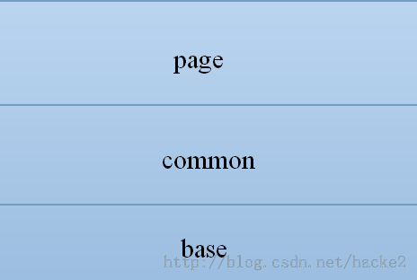

转载自http://blog.csdn.net/hacke2/article/details/21700801
- CSS的组织
3.1. Base层
3.2. Common层
3.3. Page层
3. CSS的组织
正所谓见仁见智，所以如何组织CSS可以有多种角度，例如按功能划分:将控制字体的CSS集中在font.css文件里，将控制颜色的CSS集中在color.css，文件里，
将控制布局的CSS放在1ayout.css文件里;或者按区块划分:将头部的CSS放在head.css里，底部放在foot.css里，侧边栏放在sidebar.css.，主体放在main里。
不同角度的组织方法都有自己的道理，也有自己的优点和缺点。
这里推荐一种组织CSS的方法:base.css + common.css + page.css。将网站内的所有样式，按照职能分成三大类:base.css，common.css，page.css。
在一般情况下，任何一个网页的最终表现都是由这三者共同完成的。这三者不是并列结构，而是层叠结构，如图所示。

3.1 Base层
这一层位于三者的最底层，提供css reset功能和粒度最小的通用类—原子类。这一层会被所有页面引用，是页面样式所需依赖的最底层。这一层与具体UI无关，
无论何种风格的设计都可以引用它，所以base层要力求精简和通用。如果将用css控制页面样式比喻为建房子，这一层的核心职能是为房子打好地基css reset，
并将建房用的砖块(原子类)准备充足。因为几乎所有的房子都要打地基，也都需要砖块，所以basc层具有高度可移植性，不同设计风格的网站可以使用同一个base层。
因为这一层的内容很少，所以可以简单地放在一个文件里，例如base.css。
base.css层相对稳定，基本上不需要维护。
示例：YUI推荐的 base.css 见文件
3.2 Common层
这一层位于中间，提供组件级的CSS类。提到组件，就不得不提“模块化”。“模块化”可以从样式和行为两个层面来考虑，与common层相关的是样式的模块化。
今天主要讲的css模块化也是放在这一层中。我们可以将页面内的元素拆分成一小块一小块功能和样式相对独立的小“模块”，这些“模块”有些是很少重复的，
有些是会大量重复的，我们可以将大量重复的“模块”视为一个组件。我们从页面里尽可能多地将组件提取出来，放在common层就相当于MVC模式中的Model模型。
为了保证重用性和灵活性，M需要尽可能将内部实现封装，对可能会经常变化的部分提供灵活的接口。关于common层的技巧，下面将会介绍。
common层就像建房时用到的门窗，不同风格的房子会用到不同样式的门窗，各个房间用到的门窗的数量和位置可以不同，但样式相同。门窗有自己的小元件，
比如玻璃、门闩、门框、门板、钥匙孔等。门窗可以整体移动、增减，但门窗本身的构造是相对稳定的。不同风格的房了就好比不同风格的网站，
房子选用的门窗就好比这个网站选用的UI组件。门窗最好与整个房子的风格保持一致，同样，网站最好让UI组件的风格保持相同。UI组件是网站中的单位，
在网站内部可以高度重用，但不同的网站可能会用不同的的UI组件。
所以，common层是网站级的，不同的网站有不同的common层，同一个网站只有一个common层。common层是放在一个common.css文件里，
还是按照功能划分放在诸如common-form.css或common-imageList.css多个文件里，需要根据网站规模来决定。在团队合作中，common层最好由一个人负责，统一管理。
3.3 Page层
网站中高度重用的模块，我们把它们视为组件，放在common层;非高度重用的模块，可以把它们放在page层。page层位于最高层，提供页面级的样式。
同样以建房了为比喻，page层就好比是房间内的装饰画，不同的房间张贴的装饰画各不相同。它不像砖块，所有房子都相同:也不像门窗，同一房子里相同，
它对重用性没有要求，可根据各个房间布置的需要任意张贴。
page层是页面级的，每个页面都可能会有自己的page层css。